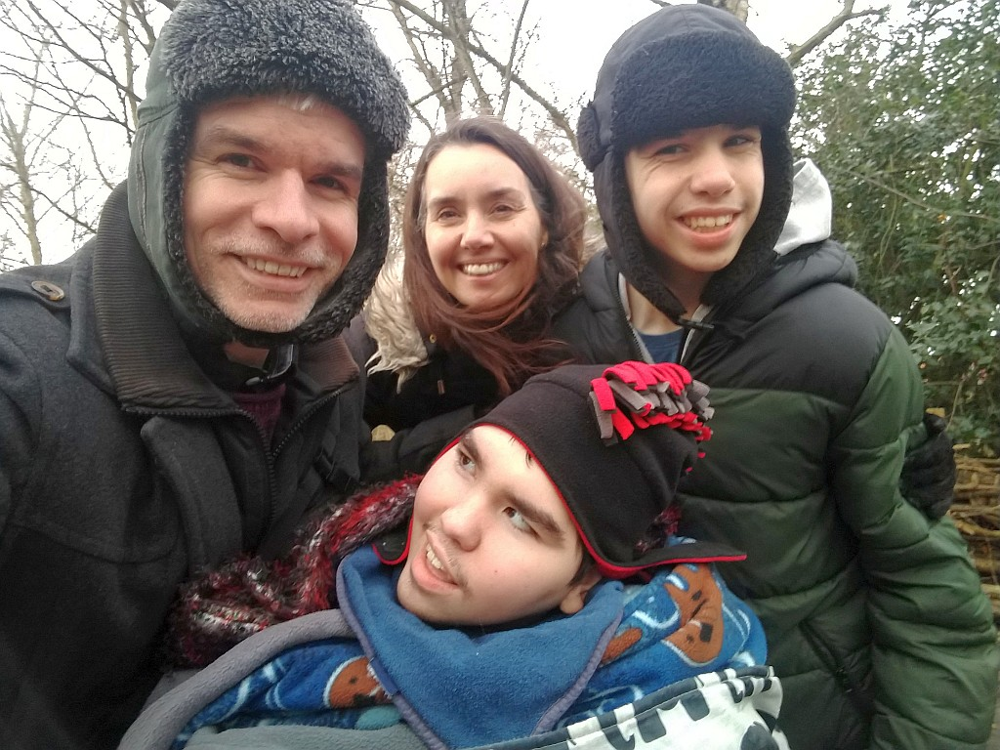

Thanks so much for visiting my website! Please take a look around and let my dad know if you can help.
About Me

Hello!
My identical twin James and I were born in 2004, 10 weeks early. We are survivors of twin-to-twin transfusion syndrome. Because of this condition, I am profoundly disabled , quadriplegic with severe spastic cerebral palsy, epilepsy and profound learning difficulties. We live with our Mum & Dad in Chester in the UK.

Highs and Lows
Like many people, I have a mixed life. I smile a lot and I love cuddles . But sometimes life is very difficult. My body is in constant tension because of the severity of my condition. And I have a lot of seizures. It hurts a lot, but my Mum and Dad tell me I’m very brave.
I love being with my friends and family - especially my brother James. He has severe learning difficults and is on the autistic spectrum. He makes me laugh. Like a lot of identical twins, we have a very special bond.
A new home
I live with my family in a lovely home in Chester, England. As I’ve grown older, and needed more and more help, the house has become too small for me. Soon I will need two-to-one care, 24 hours a day. We need more space for my supplies, my equipment and my carers. And we need to keep the family together.
Why a new home?
It’s important for me to be near my parents and especially my brother (what can I say - he needs me!). They know me best and what I need. So I need my family around me. But I also need my carers.

Home is the best place for me where I have everything I need. It’s like having a hospital in my home. And for a hospital, you need a lot of space. Space for my two wheelchairs , all my supplies, my special bed and bath , my hoists - everything.
[ insert more about the bath ]

At the same time, it can be difficult for the rest of my family, when there are carers in the home all day and all night. It makes it hard to have a private family life. Sometimes I’m noisy at night and wake everyone up. My mum is basically a superhero. But even superheroes need to sleep.
The challenge
Being disabled is expensive. Being profoundly disabled is really expensive.
We have a big problem . Any house I move to needs to be adapted for me. That can include:
- Widening doorways for my wheelchair
- Adding ceiling track hoists
- Creating ramped and level access
- Installing my specialised bath

Mum and Dad can’t adapt a house while I’m living there. They can’t afford to buy another house without selling the existing house. There aren’t many places suitable for me to move to while work is underway and my brother really doesn’t like to be away from me. Staying together is always the best option.
On top of that, moving house once is going to be hard enough (especially since James struggles with change), but moving twice - once into temporary accommodation and again into the finished house - is almost unthinkable. The best option by far is to make the new house ready while we’re still living in the old house. Then we move just once.

How we do this is our Great Big Problem and it’s the reason this website exists.
What do I need?
I need a home:
- In Chester (it needs to be near my school ; my body makes it difficult to go long distances - sometimes I need sedation, to be able to travel
- With a bedroom and bathroom downstairs for me
- With space for my carers
- With space for my all supplies and equipment
- Ideally, with space for my own washing machine (I won’t explain why!)
[ insert something about GP, pharmacy and medicines ]
Houses meeting all these requirements tend to be at least £450,000 (for a house that needs work). In addition, adaptations could cost another £50,000 or more. This means spending £200,000-300,000 more than my current house is worth. So we need to raise or borrow at least that much.
How might this be possible?
We’re scratching our heads! Here are some options:
Option 1: rent temporary accommodation
Additional cost ~ £12,000. Practicality: impossible?
We don’t like this option because of the huge disruption of moving twice. Costs include:
- Paying a removal company twice
- Rental fees for somewhere suitable in Chester
- Storage costs for some of our belongings
This probably would not work because we could not install ceiling track hoists in a rental property. There may be a suitable property with hoists already installed though.
[ not many places are wheelchair accessible ]
Option 2: bridging finance
Additional cost ~ £15,0000. Practicality: uncertain
Raising a bridging loan could enable us to buy a new house and spend two or three months undertaking the adaptations before moving in. This would depend on:
- Finding a buyer for our house who was willing to wait this long before moving in - leaving three months between exchange of contracts and completion.
- Finding a lender willing to provide this sort of finance on these terms.
Audacious option 3: fund raise - all of it
Total cost ~ £500,0000. Practicality: la la land?
Could we raise the full cost of buying a house and adapting it? My dad tells me that some businesses call this a “moon shot” or a “big hairy audacious goal”. It’s a lot of money.
Help
To do any of this, we’re going to need help. Help from our family, friends and strangers. There’s no getting round it: the things I most need, to find this new home and keep my family together, are love and money. (Not love of money though!)
What you can do to help
I would love it if you could:
- Get the word out by sending a Tweet to your followers.
- Send a donation of any amount via – insert links –
- Contribute artwork, graphic design or web skills, to make this site more beautiful. My dad’s a geek, not an artist, bless him.
- Tell your friends, family and colleagues about me!
Contact details are below.
Twins
Here’s a bit more about me and my twin.

Morgan
[ insert video clip from Royal Liv Phil ]
- Nickname: Mo
- Likes: cuddles, good music, being talked to, hot baths
- Dislikes: sudden noises, being in pain
- Main challenges: severe spastic cerebral palsy, epilepsy, no speech, vision impairment, profound and multiple learning difficulties…
- Superpower: being gorgeous
James
- Nickname: Jamesy
- Likes: car numberplates, jigsaws
- Dislikes: changes of plan
- Main challenges: autistic spectrum disorder, anxiety, severe learning difficulties, epilepsy
- Superpower: knowing everyone’s car